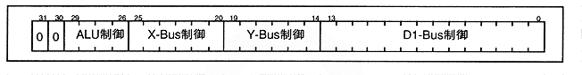

The arithmetic instruction uses the X, Y, and D1 buses and the arithmetic operation circuit (ALU). Arithmetic instructions can be classified into the following four types of control.
-
(1) ALU control instruction
(2) X-Bus control instruction
(3) Y-Bus control instruction
(4) D1-Bus control instruction
The operation instruction format is as shown in Figure 4.5.
Figure 4.5 Operation instruction format

Calculation instructions can execute the above four types of instructions in parallel. For mnemonics, write ALU control instructions at the left end, and other necessary instructions separated by spaces or tabs.